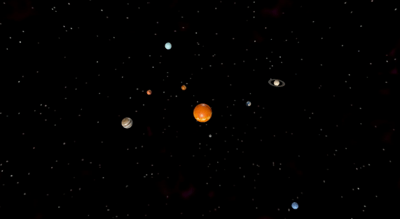

In Crossforge we mainly use scene graphs to render a scene, therefore the application of affine transformations is also handled by that. In this example, we will not use transformation nodes to atleast show that it can be done alternatively with simple transformation, by multiplicating a transformation matrix with the position vector of the object. It is obviously more complicated to apply transformations to objects than to points, as different transformations have to be applied in different spaces, for example we have to scale the position vector of all vertices or rotate the vertices around the axis in the object space while translation (and for example orbiting) can be applied to the origin(also orientation) of the object in the world space. We skipped for example multiplying the O Vector (0.0f, 0.0f, 0.0f, 1.0f) with the translation matrix and instead assigned the translation vector to the position directly for brevity and for the fact that this engine makes it easy for you, so doing it a harder way is probably even harder than normally.
To start off, we add/initiate our models and a skybox. For a more detailed guide you can check out the chapters for Assets and Skybox. Also we expect you to know and understand the (basic) concepts of this engine, if you didn’t already, read through atleast basic concepts and optionally advanced concepts. As there are 8 planets and the sun in total, we will concentrate on 1 planet throughout this example, namely Mercury and the skybox, as it is only repetition for the other models with just some tweaks.
// load skybox and planetsystem
vector<string> m_EmptySpace;
//SkyboxActor m_Skybox;
m_EmptySpace.push_back("Assets/ExampleScenes/skybox/vz_empty_space_right.png");
m_EmptySpace.push_back("Assets/ExampleScenes/skybox/vz_empty_space_left.png");
m_EmptySpace.push_back("Assets/ExampleScenes/skybox/vz_empty_space_up.png");
m_EmptySpace.push_back("Assets/ExampleScenes/skybox/vz_empty_space_down.png");
m_EmptySpace.push_back("Assets/ExampleScenes/skybox/vz_empty_space_back.png");
m_EmptySpace.push_back("Assets/ExampleScenes/skybox/vz_empty_space_front.png");
m_Skybox.init(m_EmptySpace[0], m_EmptySpace[1], m_EmptySpace[2], m_EmptySpace[3], m_EmptySpace[4], m_EmptySpace[5]);
T3DMesh<float> M;
//StaticActor m_Mercury;
SAssetIO::load("Assets/ExampleScenes/Solar/mercury/scene.gltf", &M);
setMeshShader(&M, 0.4f, 0.02f);
M.computePerVertexNormals();
m_Mercury.init(&M);
M.clear();
As stated above we will still use a basic scene graph to render our scene, so feel free to read the Scene Graph chapter in advance, if you can’t follow. The skybox has an own scene graph which we will exclude here.
//SceneGraph m_SG;
//SGNTransformation m_RootSGN;
//SGNTransformation m_SolarsystemSGN;
//SGNGeometry m_MercurySGN;
// build scene graph
m_RootSGN.init(nullptr);
m_SG.init(&m_RootSGN);
// Solarsystem
m_SolarsystemSGN.init(&m_RootSGN, Vector3f(0.0f, 0.0f, 0.0f));
// Mercury
m_MercurySGN.init(&m_SolarsystemSGN, &m_Mercury);
//the scale matrix would be multiplied with the position vectors of all vertices in the objectspace, the geometry node will do this for us
m_MercurySGN.scale(Vector3f(0.1f, 0.1f, 0.1f));
//as mentioned above, we skip multiplicating the translation matrix with the origin
m_MercurySGN.position(Vector3f(2.0f, 2.0f, 0.0f));
By changing the values for scale and position(along x-Axis) for the other models we can place the basic parts of our solarsystem. But the scene is static, we want the planets to orbit the sun. For that we have to continously change the position of every planet so that it rotates around the y-Axis. To achieve that we can multiplicate the rotation matrix with the position vector in our main loop.
Vector3f pos3;
Vector4f pos;
pos3 = m_MercurySGN.position();
pos = Vector4f(pos3.x(), pos3.y(), pos3.z(), 1.0f);
//the function rotationMatrix() creates a rotation matrix based on a quaternion, AngleAxisf() returns a quaternion (call) for a rotation around the passed Axis/Vector
pos = CForgeMath::rotationMatrix((Quaternionf)AngleAxisf(CForgeMath::degToRad(45.0f / 120.0f), Vector3f::UnitY())) * pos;
m_MercurySGN.position(Vector3f(pos.x(), pos.y(), pos.z()));
As this is in the main lopp it continously applies the rotation to the position of the object.
To apply an affine transformation, we have to use homogenous coordinates, meaning we have to multiply a 4x4 Matrix with a 4-component vector. The position vector is a 3-component vector.
And with that we have a really basic version of our solarsystem. Make sure to check out the complete source code in /Examples/exampleTransformation.hpp and also see how much easier it gets with using the full functions of the scene graph while also adding more details to the scene in the next chapter Scene Graphs.